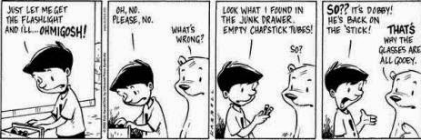

Recovered weblog entry
Comic
Crunch time.
I told you that the entries would thin out over the space of the month, but did anyone believe me? Did you listen? Probably.
My apologies (again) for the delayed entry today. Last night, Wife and I babysat a child of a friend of ours for about four hours while they saw The Return of the King. Before the night was even expired, I felt like a ton of bricks. I couldn't hardly stay awake, so when the time came for the babe to be picked up, I hit the bed like a rock and did not stir until morning.
Besides, if I had tried to compose anything last night, it would have been very sloppy and disjointed. So, depending on your point of view, I saved you.
At this time, I'm waiting for a certain beta to complete downloading so that I can begin the installation process. It was a fairly hefty file, measuring in at just under 250 megabytes. Reminiscing, I wonder what that would have been like on a dial-up connection.
Point in fact, it wouldn't. I would not have even tried.
Side note: My cat just lost my last fix of Chappy Stick. I saw him do it. He batted that thing right underneath the door of our storage closet. And I'm not going in there to look for it.
I don't quite understand his fascination with that petroleum tube, but maybe that's what I should get him for Christmas. However, knowing him, he'd just get disinterested because he couldn't pick them out of my pocket anymore.
Oh well, you take what you can get. And I have a cat that's addicted to Chap Stick.

Tomorrow comes quickly. I must prepare. Good night!